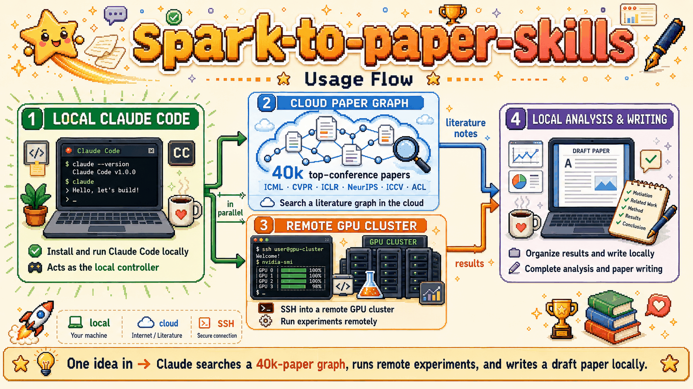
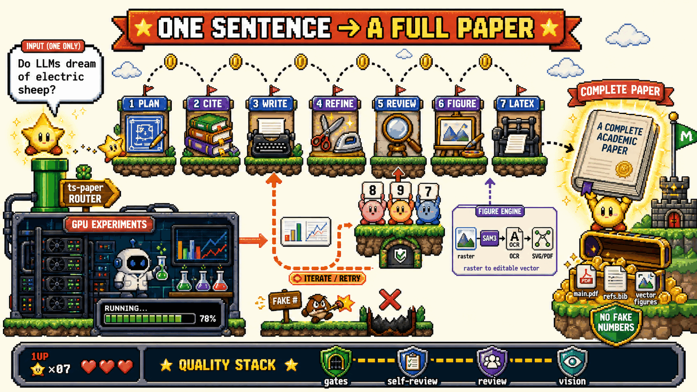
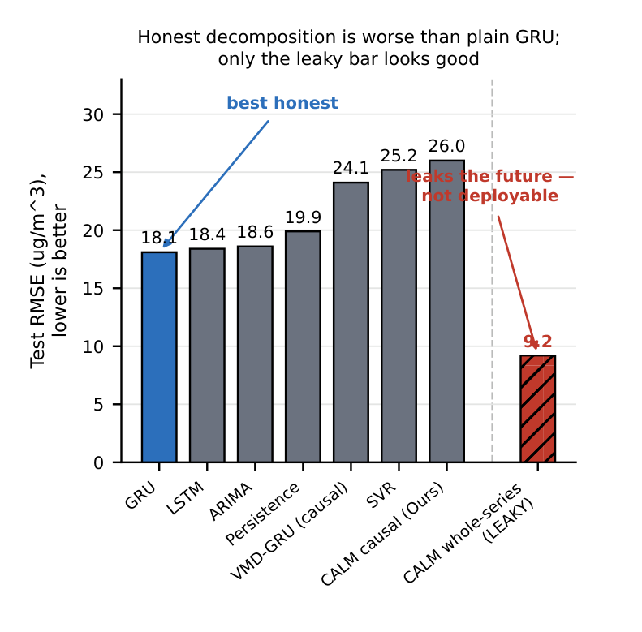
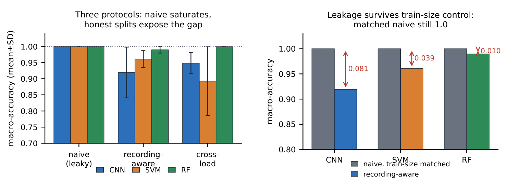
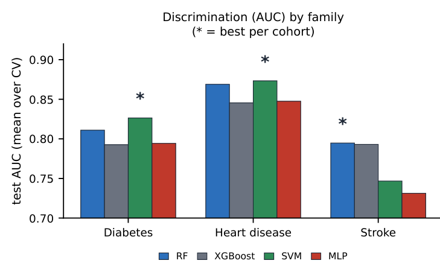
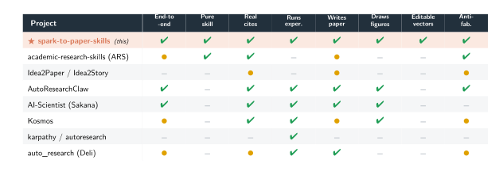

Fabricated numbers
A draft that needs a result will happily invent one. Once a made-up metric enters the text, every later revision inherits and defends it.
Drop a spark. Get a paper.
14 composable Claude Code skills turn a one-line idea into a compiled paper PDF — real verified references, editable vector figures, and machine-checked integrity included. Claude owns the judgment; deterministic Python gates own the facts. No app. No server. No setup.
A one-line idea, a proposal, a proposal with real results, or a corpus file all route through ts-paper and the 14-skill suite, and come out as a compiled PDF with sources, figures and logs on disk.
git clone https://github.com/Spark-To-Paper-Skills/spark-to-paper-skills.git ~/.claude/skills/spark-to-paper-skills
Auto-loads on the next Claude Code session. Needs Python 3.10+
and LaTeX (latexmk) to compile.
Run ts-paper on this proposal.
Paste an idea, a proposal, or a proposal + real results.
Stage 0 routes it, the chain runs, and every stage leaves its
trace under logs/.
Seven papers went in as research proposals and came out as compiled, publication-format PDFs. The pipeline planned each paper, verified every reference it cited, drafted and adversarially reviewed the text, drew editable vector figures, and compiled the result — with deterministic gates checking every step.
Totals across the seven showcase papers below. References verified via WebSearch + Crossref; figures delivered as editable vector PDFs; integrity gates passed on all seven.
Autonomous paper generators fail in three familiar ways: they invent numbers, they cite papers that do not exist, and they ship figures nobody can edit. spark-to-paper splits every stage between two actors — Claude owns the judgment (writing, research, critique, review) and deterministic Python gates own the facts. A red gate does not warn; it fails the build.
A draft that needs a result will happily invent one. Once a made-up metric enters the text, every later revision inherits and defends it.
Title-only stubs generated to hit a quota. They look like a bibliography and collapse at the first reviewer who checks a DOI.
AI image models produce rasters. A camera-ready paper needs vectors you can still edit the day before the deadline — not a flattened PNG.
One command, run_gates.py <workdir> all, chains the
suite’s finish-line gates and exits nonzero on the first red one: citation
completeness, no-fabrication, word bands, editable-vector presence,
figure-critique traces, and a zero-error LaTeX log. A nonzero exit means
the paper is not done — no matter how good it looks.

Judgment-heavy work stays with the model: framing the story, planning the blueprint, reading candidate references, writing and refining prose, critiquing figures with its own vision, arguing against the draft in review.
Deterministic tasks go to code: linting drafts, checking citation completeness, plotting from data, vectorizing figures, assembling LaTeX, compiling, and gating. Code never authors content; it only verifies it.
Section shape, word bands, no-fabrication, citation completeness, vector-PDF presence, compile status. Run per stage or all at once; the first red gate stops the line.
The refine stage right-sizes every section to its band, scrubs AI tells from the prose, and re-reads each edit for the contradiction it may have introduced.
Isolated reviewers read the whole draft and must quote it verbatim to raise an issue; perspective-diverse skeptics then try to refute each finding. The loop runs until dry.
Claude looks at every rendered figure with its own eyes — faithfulness to the method, semantic agreement with the equations, readability, aesthetics — and a measured geometry audit drives at least four repair rounds on every redrawn SVG.
You drop one input — a bare idea, a structured proposal,
a proposal with real results, or a story from a previous run. Stage 0 of
ts-paper classifies it with no fixed schema, sets the one switch
the whole suite reads (results_mode), and drives the chain.
Files on disk are the contract between stages; each stage
writes an INPUT / DECISIONS / OUTPUT trace to logs/.
| You dropped | Route | results_mode |
|---|---|---|
| A one-line idea | ts-idea2story builds the story first, then the chain |
proposal |
| A structured proposal | Straight into the chain — result cells stay blank | proposal |
| A proposal + measured results | ts-paper-data distills the numbers into results.facts.json |
data_aware |
A story.json from a prior run |
Skips idea2story, straight to planning | proposal |
Any real measured number in the input — a filled table, “achieved
0.62 HOTA” — forces the data-aware route; it is never sent down the
no-numbers proposal path. Optional upstream: ts-kg-build turns a
corpus.jsonl into a research-pattern knowledge graph for story
recall, degrading gracefully when no embedding endpoint is configured.

One reasoning pass emits blueprint.json: title, keywords, exactly three contributions, notation, terminology, experiment design, per-section word targets.
Broad WebSearch per angle, abstracts read, metadata fetched via Crossref / arXiv. Floor of 40 real references, every one mapped to the claim it supports.
All sections in one holistic pass — terminology stays consistent because the whole paper is in context. In proposal mode, result cells stay --.
Right-size to the enforced word bands, scrub the AI tells, self-check the logic of every edit. “Right-sized” is verified in code, not by eye.
The adversarial panel argues against the paper: isolated reviewers, verbatim-quote anti-skim, skeptic verification, loop until dry. Fixes route back through refine.
Data plots are born-vector matplotlib; schematics are PaperBanana renders whose design language is learned, then redrawn as native, audited SVG.
Template-driven assembly and latexmk. Zero-error logs and a resolved bibliography required; the fix loop is bounded at three tries.
Runs automatically after the first gates-green draft: diagnoses the paper’s logic, runs only feasible experiments on real data, fills the tables, recompiles.
Forward-looking prose only. A concrete metric in a sentence — “18.3%”, “0.72 F1”, “2.5×”, even “doubles” — hard-fails the lint; bare-integer results are caught in self-review. Result tables exist with every cell literally --; the only place a dash may appear. No results figure is drawn at all, because drawing one would fabricate data.
Your real results are distilled into results.facts.json — the audit ground truth. Result sections switch to definitive past tense; any decimal or percent in prose that is not in the facts file fails the build. A measured-but-missing value is written TBD and never guessed.
python skills/ts-paper/scripts/run_gates.py <workdir> all # nonzero exit = NOT done
The engine is decided by which section a figure lives in.
Results plots draw from real data with matplotlib — numerically exact,
born vector, never from an image model. Every other figure runs a three-act
pipeline: the official PaperBanana agent team renders candidate
images; ts-figure-svg learns the winner’s design language and
redraws the figure natively — real
<rect>/<path>/<text>, its content taken from the
paper’s own facts, never traced from pixels; then a stdlib geometry audit
drives a repair loop of at least four rounds. If native redraw is impossible,
the DrawAI hybrid — then the approved PNG — steps in.
Never a lossy trace.
The official PaperBanana pipeline — Retriever → Planner → Stylist → Visualizer → Critic — produces candidate images; a distilled image-model loop stands in when no key is configured.
Claude looks at the chosen render and extracts its design language — palette, type scale, spacing, idiom — into a style sheet. The PNG is a style reference only.
The figure is redrawn as a native SVG from the paper’s own text: every label live <text>, every edge traceable to the method. Never traced, never embedded — take the PNG’s look, take the paper’s content.
A stdlib-only geometry audit measures the drawing — overflow, text-on-text, clipped arrowheads, sub-legible type — and drives repairs for at least four rounds, with no upper bound while defects remain.
Palette, type scale, spacing and visual idiom are read off the chosen PaperBanana candidate by eye and written down as a style sheet.
Modules, edges and labels come from the figure spec and the paper’s equations — generated renders invent links and garble labels, so their logic is never trusted.
The figure is drawn as genuine <rect>/<path>/<text> elements — every label live, editable text, with glyphs kept Times-safe so the PDF embeds fonts cleanly.
audit_svg.py computes text boxes from Times core-14 metrics and fails a round on canvas or card overflow, a clipped arrowhead, text over text, shapes painted over text, sub-legible type, font-fallback glyphs, CSS-cascade colour traps — and path soup, the signature of a traced raster.
The SVG exports to a vector PDF that must genuinely embed its fonts — an exporter that outlines every glyph is caught — and the figure is checked on the real compiled page. The build gate requires at least four audit rounds.
Four rounds is the floor, not the ceiling — the draw–measure–repair loop keeps going until the audit comes back clean. And if native redraw is genuinely impossible, the ladder holds: DrawAI hybrid, then the approved PNG. Never a lossy trace.
results.facts.json, and a vector PDF written alongside every PNG with the text kept editable.



Auto-tracing one figure produced 59,430 paths, 10 MB, and not one editable label — and it was still blurry when zoomed. “No <image> element” does not mean vector. So the redraw takes the PNG’s look and the paper’s content, and draws real objects.
Native SVG first. If the redraw is impossible, the vendored DrawAI hybrid keeps the approved render pixel-exact under an editable text overlay (~0.91 SSIM, key-free via ModelScope). Failing that, the approved PNG goes in as-is — full richness preserved, editability deferred. Never a lossy trace.
After the chain delivers a gates-green first draft, ts-paper-experiment
starts automatically — no one has to ask. It maps the paper’s logic,
plans the minimum set of experiments, classifies each as
necessary, feasible, or blocked, executes only what real data
and code support, and recompiles the paper with measured numbers.
If nothing can run, it writes a requirements report and leaves the tables in
proposal form — it never invents results.
Three reports map the territory: the paper’s logic, its claimed contributions, and the gap between claimed and existing experiments.
Each experiment is classified necessary / feasible / blocked, with metrics, baselines and commands. Named open datasets must actually be downloaded before “blocked” may be declared.
Real data and code only, seeds fixed at [1, 2, 3], cheap local runs auto-approved, costly or external-data runs held for explicit user approval.
Every value is recomputed from per-seed raw logs, traced to its source file, and only then written into the paper’s own result tables — nulls and honest failures included.
Provenance, completeness, code–paper consistency, design correctness, artifact completeness, and a single truthfulness verdict. “No value may be guessed, manually invented, or written from memory.”
Anything classified CLAIMED_BUT_NOT_RUN gets its claim weakened or removed — or the run stops to ask. The final step diffs the before/after paper and issues an honesty verdict, admitting when experiments weakened the original story.
| Guard | Default |
|---|---|
| Random seeds | [1, 2, 3] |
| Max runtime per experiment | 6 hours |
| Traceable results required | true |
| Ask the user before | changing a contribution · deleting a core method · a new experiment type · strong claims from weak results |
| Golden rules | 27 human-approved rules; candidates are never auto-promoted |
From the skill’s bundled paper_config.yaml and
golden_rules.md. Experiments run locally; Overleaf sync is
configurable via paper_config.yaml + .env.
The blueprint fixes the shape before a word is written: per-section word bands, exactly three contributions, a notation table every section must reuse. The draft is written in one holistic pass so terminology never drifts; refine right-sizes it and scrubs the tells; and then a review panel does what the rest of the suite never does — argues against the paper.
Title of 8–14 words, 4–6 keywords, three contributions, full notation — one reasoning pass, linted before anything downstream may start.
Floor of 40, built through Crossref and arXiv metadata — authors, venue, pages, DOI. A title-only stub is forbidden; a claim with no real paper behind it goes uncited.
Method first, ~2000–3000 words; intro in exactly five paragraphs; related work by theme, never chronology. Every symbol defined before use, no raw Unicode.
Word bands enforced in code. Comma-soup fragments become connected prose; “delve”, “leverage”, “it is worth noting” and their kin are hunted down; citations, math and labels stay untouched.
The review panel runs N isolated reviewers — theory, empirical, applied lenses — each seeing nothing but the paper. Every issue must carry an exact verbatim quote and a closeable criterion. Each finding then faces three perspective-diverse skeptics — misreading? already addressed? overblown? — and survives unless a majority refute it. Fresh panels re-run until a full pass finds nothing new — within a budget-capped number of rounds. Fixes are minimal, targeted, and re-gated: the linters are re-run after the edits land, because the suite derives “green” — it never forecasts it.
| Template | Venue | Style | Ref floor | Status |
|---|---|---|---|---|
ts_iieta |
Traitement du Signal | two-column, numeric citations | 40 | approximation, demo-only |
neurips |
NeurIPS (community) | single-column, author-year | 30 | approximation, demo-only |
neurips_official |
NeurIPS 2025 | official .sty, fetched verbatim |
42 | official style files |
Add any venue by dropping a templates/<name>/ directory with
a template.json and the venue’s LaTeX assets — no code
changes. The suite’s hard rule: style files are user-provided or fetched
verbatim from the official source, never fabricated.
Each paper below started as a research proposal and ran the full chain — plan → cite → write → refine → review → figure → compile. Click any card for the compiled PDF.
Conference-format samples lead the set: one in the official ICML 2025 style and two in the official NeurIPS 2025 style (preprint option); the remaining four use the Traitement du Signal journal format. References verified via WebSearch + Crossref on every paper; all figures delivered as editable vector PDFs; integrity gates passed on all seven.
The heavy autonomous scientists match the breadth — but ship as standalone Python products: Docker, Neo4j, tens of thousands of lines. The lighter skill suites stay in Claude Code — but don’t run experiments or draw figures. This is the only pure Claude Code plugin that runs the entire arc, and the only tool of any kind with an editable-vector figure engine.

If spark-to-paper-skills helps your research, please cite the project.
@software{spark_to_paper_skills_2026,
author = {White, Albus},
title = {spark-to-paper-skills: 14 composable Claude Code skills
from a one-line idea to a compiled paper},
year = {2026},
version = {1.2.0},
url = {https://github.com/Spark-To-Paper-Skills/spark-to-paper-skills},
license = {MIT}
}